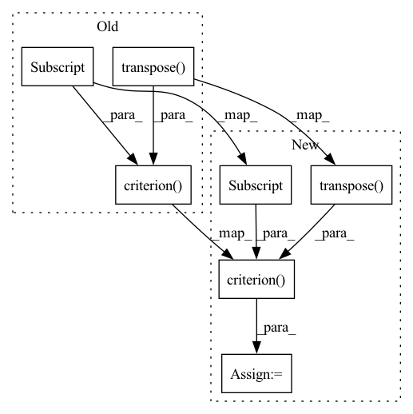

Pattern ID :17729

Before Change
def eval_objective(self, data: Dict[str, torch.Tensor], model: nn.Module
) -> Dict[str, torch.Tensor]:
logits, _ = model(data["input"], past=None)
return self.criterion(logits.transpose(1, 2), data["output"])
def train_gpt2_model(args: argparse.Namespace):
spec = GPT2TrainingSpec(
After Change
def eval_objective(self, data: Dict[str, torch.Tensor], model: nn.Module
) -> Dict[str, torch.Tensor]:
logits, _ = model(data["input"], past=None)
loss = self.criterion(logits.transpose(1, 2), data["output"])
return {"loss": loss}
def train_gpt2_model(args: argparse.Namespace):
In pattern: SUPERPATTERN
Frequency: 3
Non-data size: 7
Instances
Fragment ID: 58391803
Project Name: affjljoo3581/gpt2
Commit Name: 49ebc2db70c79712d9f7791cace1a8c2663b7a6c
Time: 2020-07-25
Author: affjljoo3581@gmail.com
File Name: src/gpt2/train_model.py
M Class Name: GPT2TrainingSpec
N Class Name: GPT2TrainingSpec
M Method Name: eval_objective(3)
N Method Name: eval_objective(3)
M Parent Class: TrainingSpec
N Parent Class: TrainingSpec
M File Name: src/gpt2/train_model.py
N File Name: src/gpt2/train_model.py
M Start Line: 67
M End Line: 67
N Start Line: 68
N End Line: 69
'>
Before Change
def eval_objective(self, data: Dict[str, torch.Tensor], model: nn.Module
) -> Dict[str, torch.Tensor]:
logits, _ = model(data["input"], past=None)
loss = self.criterion(logits.transpose(1, 2), data["output"]).mean(-1)
return {"loss": loss.mean(), "perplexity": loss.exp().mean()}
After Change
def eval_objective(self, data: Dict[str, torch.Tensor], model: nn.Module
) -> Dict[str, torch.Tensor]:
logits, _ = model(data["input"], past=None)
loss = self.criterion(logits.transpose(1, 2), data["output"])
mask = (data["output"] != self.vocab.pad_idx).float()
loss = (loss * mask).sum() / mask.sum()
perplexity = (loss.exp() * mask).sum() / mask.sum()
return {"loss": loss, "perplexity": perplexity}
'>
Fragment ID: 58391807
Project Name: affjljoo3581/gpt2
Commit Name: ca25b19eb1f6d46d8855231c367172ff62e427b0
Time: 2020-08-01
Author: affjljoo3581@gmail.com
File Name: src/gpt2/evaluate_model.py
M Class Name: GPT2EvaluationSpec
N Class Name: GPT2EvaluationSpec
M Method Name: eval_objective(3)
N Method Name: eval_objective(3)
M Parent Class: EvaluationSpec
N Parent Class: EvaluationSpec
M File Name: src/gpt2/evaluate_model.py
N File Name: src/gpt2/evaluate_model.py
M Start Line: 41
M End Line: 43
N Start Line: 40
N End Line: 46
'>
Before Change
def train_objective(self, data: Dict[str, torch.Tensor], model: nn.Module
) -> Dict[str, torch.Tensor]:
logits, _ = model(data["input"], past=None)
return self.criterion(logits.transpose(1, 2), data["output"])
def eval_objective(self, data: Dict[str, torch.Tensor], model: nn.Module
) -> Dict[str, torch.Tensor]:
logits, _ = model(data["input"], past=None)
After Change
def train_objective(self, data: Dict[str, torch.Tensor], model: nn.Module
) -> Dict[str, torch.Tensor]:
logits, _ = model(data["input"], past=None)
loss = self.criterion(logits.transpose(1, 2), data["output"])
return {"loss": loss}
def eval_objective(self, data: Dict[str, torch.Tensor], model: nn.Module
) -> Dict[str, torch.Tensor]:
'>
Fragment ID: 58391808
Project Name: affjljoo3581/gpt2
Commit Name: 49ebc2db70c79712d9f7791cace1a8c2663b7a6c
Time: 2020-07-25
Author: affjljoo3581@gmail.com
File Name: src/gpt2/train_model.py
M Class Name: GPT2TrainingSpec
N Class Name: GPT2TrainingSpec
M Method Name: train_objective(3)
N Method Name: train_objective(3)
M Parent Class: TrainingSpec
N Parent Class: TrainingSpec
M File Name: src/gpt2/train_model.py
N File Name: src/gpt2/train_model.py
M Start Line: 62
M End Line: 62
N Start Line: 62
N End Line: 63